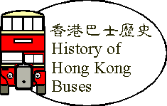

當大家看見「九龍巴士(1933)有限公司」的字樣時，千萬不要以為九龍的巴士是 由1933年開始，同樣地，也不要以為中華巴士一開始就是服務於香港島，因為.. ....
一切從九龍開始 早在20年代，香港已有巴士行駛。當時在香港島已有電車行駛，市民可以乘 搭電車來往港島北岸各區。但在九龍方面並無電車行駛，所以來往九龍各區，只 能靠步行，富裕人家就可以乘搭人力車代步。商人認為在九龍投資巴士服務應有 利可圖，於是便向英國的Thornycroft公司購買了一輛Bodicea型巴士在九龍行駛 。這間巴士公司的股東全是中國人，於是便命名為「中華汽車公司」。公司的巴 士行走於尖沙咀到深水步之間。 由於大多數人以前都未曾乘過「呠呠車」，所以許多市民都去一嘗「呠呠車 」的滋味，於是生意大好，也吸引了新的投資者。九龍汽車公司於1921年成立， 也是來往尖沙咀至深水步之間，不過路線與中巴不同。另外，還有一間啟德巴士 公司，顧名思義，該公司是行走啟德機場附近與油麻地和尖沙咀之間。